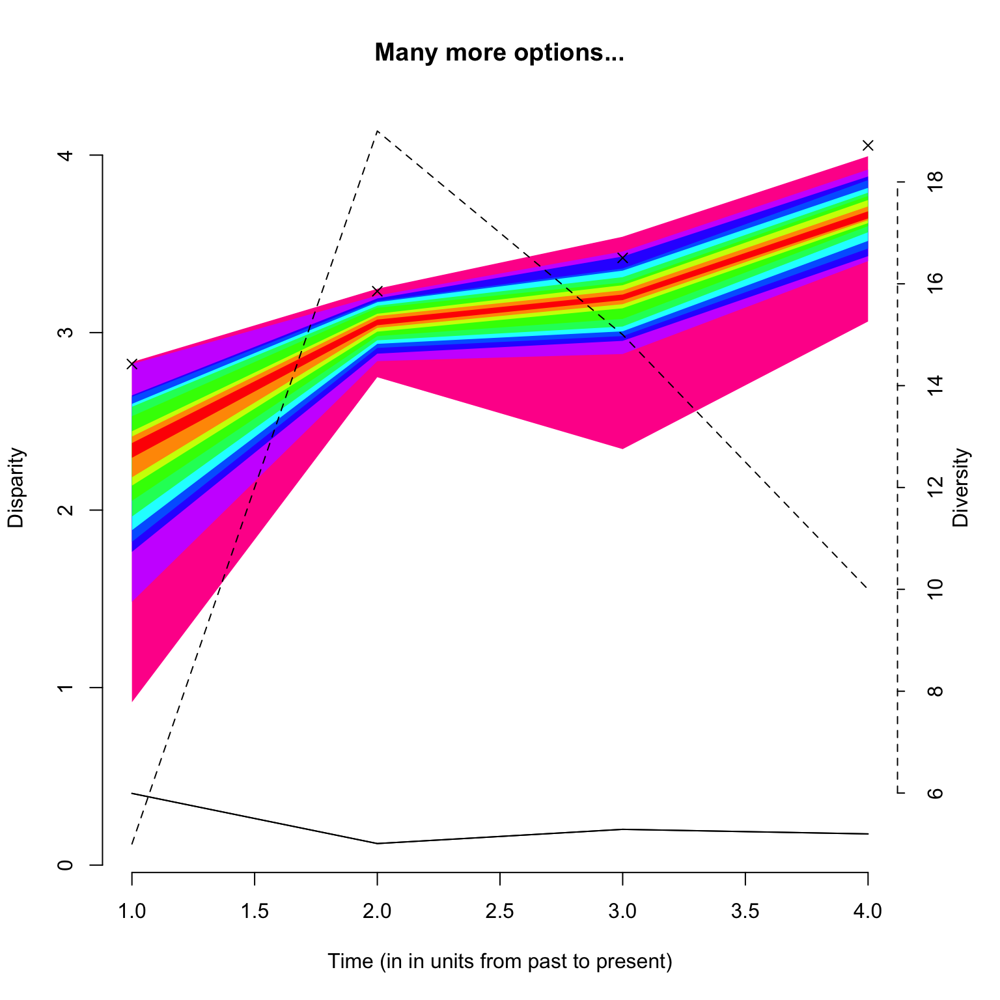
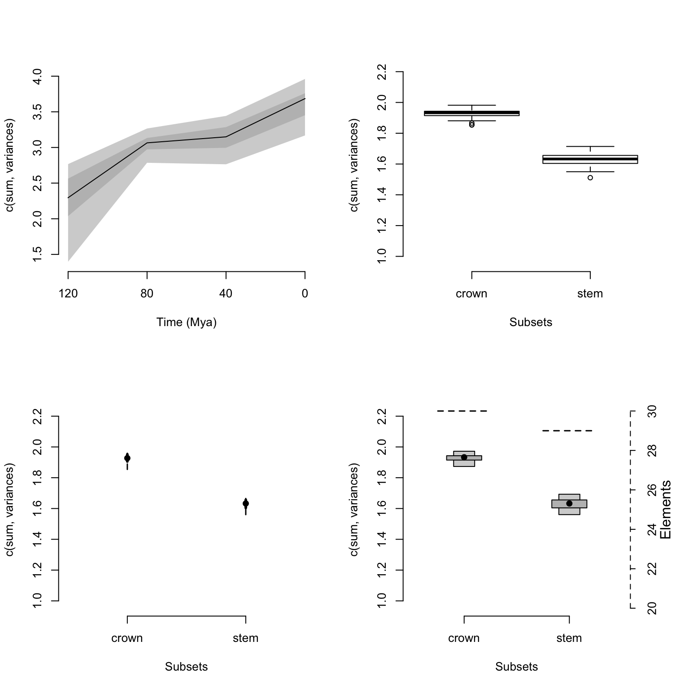
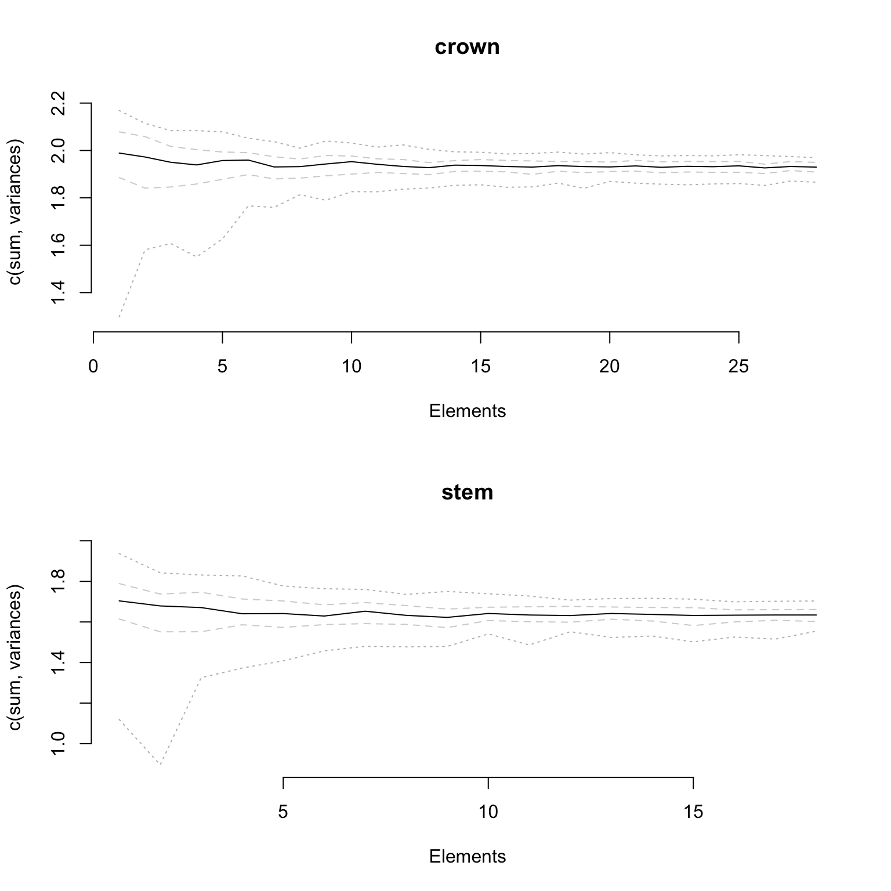

4 Details of specific functions
The following section contains information specific to some functions. If any of your questions are not covered in these sections, please refer to the function help files in R, send me an email (guillert@tcd.ie), or raise an issue on GitHub. The several tutorials below describe specific functionalities of certain functions; please always refer to the function help files for the full function documentation!
Before each section, make sure you loaded the Beck and Lee (2014) data (see example data for more details).
## Loading the data
data(BeckLee_mat50) ; data(BeckLee_mat99)
data(BeckLee_tree) ; data(BeckLee_ages)4.1 Time slicing
The function time.subsamples allows users to divide the matrix into different time subsamples or slices given a dated phylogeny that contains all the elements (i.e. taxa) from the matrix. Each subsample generated by this function will then contain all the elements present at a specific point in time or during a specific period in time.
Two types of time subsamples can be performed by using the method option:
- Discrete time subsamples (or time-binning) using
method = discrete - Continuous time subsamples (or time-slicing) using
method = continuous
For the time-slicing method details see Cooper and Guillerme (in prep.). For both methods, the function takes the time argument which can be a vector of numeric values for:
- Defining the boundaries of the time bins (when
method = discrete) - Defining the time slices (when
method = continuous)
Otherwise, the time argument can be set as a single numeric value for automatically generating a given number of equidistant time-bins/slices. Additionally, it is also possible to input a dataframe containing the first and last occurrence data (FAD/LAD) for taxa that span over a longer time than the given tips/nodes age, so taxa can appear in more than one time bin/slice.
Here is an example for method = discrete:
## Generating three time bins containing the taxa present every 40 Ma
time.subsamples(data = BeckLee_mat50, tree = BeckLee_tree, method = "discrete",
time = c(120, 80, 40, 0))## ---- dispRity object ----
## 3 discrete time subsamples for 50 elements:
## 120 - 80, 80 - 40, 40 - 0.Note that we can also generate equivalent results by just telling the function that we want three time-bins as follow:
## Automatically generate three equal length bins:
time.subsamples(data = BeckLee_mat50, tree = BeckLee_tree, method = "discrete",
time = 3)## ---- dispRity object ----
## 3 discrete time subsamples for 50 elements:
## 133.51104 - 89.00736, 89.00736 - 44.50368, 44.50368 - 0.In this example, the taxa were split inside each time-bin according to their age. However, the taxa here are considered as single points in time. It is totally possible that some taxa could have had longer longevity and that they exist in multiple time bins. In this case, it is possible to include them in more than one bin by providing a table of first and last occurrence dates (FAD/LAD). This table should have the taxa names as row names and two columns for respectively the first and last occurrence age:
## Displaying the table of first and last occurrence dates for each taxa
head(BeckLee_ages)## FAD LAD
## Adapis 37.2 36.8
## Asioryctes 83.6 72.1
## Leptictis 33.9 33.3
## Miacis 49.0 46.7
## Mimotona 61.6 59.2
## Notharctus 50.2 47.0## Generating time bins including taxa that might span between them
time.subsamples(data = BeckLee_mat50, tree = BeckLee_tree, method = "discrete",
time = c(120, 80, 40, 0), FADLAD = BeckLee_ages)## ---- dispRity object ----
## 3 discrete time subsamples for 50 elements:
## 120 - 80, 80 - 40, 40 - 0.When using this method, the oldest boundary of the first bin (or the first slice, see below) is automatically generated as the root age plus 1% of the tree length, as long as at least three elements/taxa are present at that point in time. The algorithm adds an extra 1% tree length until reaching the required minimum of three elements. It is also possible to include nodes in each bin by using inc.nodes = TRUE and providing a matrix that contains the ordinated distance among tips and nodes.
For the time-slicing method (method = continuous), the idea is fairly similar. This option, however, requires a matrix that contains the ordinated distance among taxa and nodes and an extra argument describing the assumed evolutionary model (via the model argument). This model argument is used when the time slice occurs along a branch of the tree rather than on a tip or a node, meaning that a decision must be made about what the value for the branch should be. The model can be one of the following:
acctranwhere the data chosen along the branch is always the one of the descendantdeltranwhere the data chosen along the branch is always the one of the ancestorpunctuatedwhere the data chosen along the branch is randomly chosen between the descendant or the ancestorgradualwhere the data chosen along the branch is either the descendant or the ancestor depending on branch length
## Generating four time slices every 40 million years under a model of gradual evolution
time.subsamples(data = BeckLee_mat99, tree = BeckLee_tree,
method = "continuous", model = "gradual", time = c(120, 80, 40, 0),
FADLAD = BeckLee_ages)## ---- dispRity object ----
## 4 continuous (gradual) time subsamples for 99 elements:
## 120, 80, 40, 0.## Generating four time slices automatically
time.subsamples(data = BeckLee_mat99, tree = BeckLee_tree,
method = "continuous", model = "gradual", time = 4, FADLAD = BeckLee_ages)## ---- dispRity object ----
## 4 continuous (gradual) time subsamples for 99 elements:
## 133.51104, 89.00736, 44.50368, 0.4.2 Customised subsamples
Another way of separating elements into different categories is to use customised subsamples as briefly explained above. This function simply takes the list of elements to put in each group (whether they are the actual element names or their position in the matrix).
## Creating the two groups as a list
mammal_groups <- list("crown" = c(16, 19:41, 45:50),
"stem" = c(1:15, 17:18, 42:44))
## Separating the dataset into two different groups
custom.subsamples(BeckLee_mat50, group = mammal_groups)## ---- dispRity object ----
## 2 customised subsamples for 50 elements:
## crown, stem.Elements can easily be assigned to different groups if necessary!
## Creating the three groups as a list
mammal_groups <- list("crown" = c(16, 19:41, 45:50),
"stem" = c(1:15, 17:18, 42:44).
"all" = c(1:50))4.3 Bootstraps and rarefactions
One important step in analysing ordinated matrices is to pseudo-replicate the data to see how robust the results are, and how sensitive they are to outliers in the dataset. This can be achieved using the function boot.matrix to bootstrap and/or rarefy the data. The default options will bootstrap the matrix 100 times without rarefaction using the “full” bootstrap method (see below):
## Default bootstrapping
boot.matrix(data = BeckLee_mat50)## ---- dispRity object ----
## 50 elements with 48 dimensions.
## Data was bootstrapped 100 times (method:"full").The number of bootstrap replicates can be defined using the bootstraps option. The method can be modified by controlling which bootstrap algorithm to use through the boot.type argument. Currently two algorithms are implemented:
fullwhere the bootstrapping is entirely stochastic (n elements are replaced by any m elements drawn from the data)singlewhere only one random element is replaced by one other random element for each pseudo-replicate
## Bootstrapping with the single bootstrap method
boot.matrix(BeckLee_mat50, boot.type = "single")## ---- dispRity object ----
## 50 elements with 48 dimensions.
## Data was bootstrapped 100 times (method:"single").This function also allows users to rarefy the data using the rarefaction argument. Rarefaction allows users to limit the number of elements to be drawn at each bootstrap replication. This is useful if, for example, one is interested in looking at the effect of reducing the number of elements on the results of an analysis.
This can be achieved by using the rarefaction option that draws only n-x at each bootstrap replicate (where x is the number of elements not sampled). The default argument is FALSE but it can be set to TRUE to fully rarefy the data (i.e. remove x elements for the number of pseudo-replicates, where x varies from the maximum number of elements present in each subsample to a minimum of three elements). It can also be set to one or more numeric values to only rarefy to the corresponding number of elements.
## Bootstrapping with the full rarefaction
boot.matrix(BeckLee_mat50, bootstraps = 20, rarefaction = TRUE)## ---- dispRity object ----
## 50 elements with 48 dimensions.
## Data was bootstrapped 20 times (method:"full") and fully rarefied.## Or with a set number of rarefaction levels
boot.matrix(BeckLee_mat50, bootstraps = 20, rarefaction = c(6:8, 3))## ---- dispRity object ----
## 50 elements with 48 dimensions.
## Data was bootstrapped 20 times (method:"full") and rarefied to 6, 7, 8, 3 elements.One additional important argument is dimensions that specifies how many dimensions from the matrix should be used for further analysis. When missing, all dimensions from the ordinated matrix are used.
## Using the first 50% of the dimensions
boot.matrix(BeckLee_mat50, dimensions = 0.5)## ---- dispRity object ----
## 50 elements with 24 dimensions.
## Data was bootstrapped 100 times (method:"full").## Using the first 10 dimensions
boot.matrix(BeckLee_mat50, dimensions = 10)## ---- dispRity object ----
## 50 elements with 10 dimensions.
## Data was bootstrapped 100 times (method:"full").Of course, one could directly supply the subsamples generated above (using time.subsamples or custom.subsamples) to this function.
## Creating subsamples of crown and stem mammals
crown_stem <- custom.subsamples(BeckLee_mat50,
group = list("crown" = c(16, 19:41, 45:50),
"stem" = c(1:15, 17:18, 42:44)))
## Bootstrapping and rarefying these groups
boot.matrix(crown_stem, bootstraps = 200, rarefaction = TRUE)## ---- dispRity object ----
## 2 customised subsamples for 50 elements with 48 dimensions:
## crown, stem.
## Data was bootstrapped 200 times (method:"full") and fully rarefied.## Creating time slice subsamples
time_slices <- time.subsamples(data = BeckLee_mat99, tree = BeckLee_tree,
method = "continuous", model = "gradual",
time = c(120, 80, 40, 0),
FADLAD = BeckLee_ages)
## Bootstrapping the time slice subsamples
boot.matrix(time_slices, bootstraps = 100)## ---- dispRity object ----
## 4 continuous (gradual) time subsamples for 99 elements with 97 dimensions:
## 120, 80, 40, 0.
## Data was bootstrapped 100 times (method:"full").4.4 Disparity metrics
There are many ways of measuring disparity! In brief, disparity is a summary metric that will represent an aspect of an ordinated space (e.g. a MDS, PCA, PCO, PCoA). For example, one can look at ellipsoid hyper-volume of the ordinated space (Donohue et al. 2013), the sum and the product of the ranges and variances (Wills et al. 1994) or the median position of the elements relative to their centroid (Wills et al. 1994). Of course, there are many more examples of metrics one can use for describing some aspect of the ordinated space, with some performing better than other ones at particular descriptive tasks, and some being more generalist.
Because of this great diversity of metrics, the package dispRity does not have one way to measure disparity but rather proposes to facilitate users in defining their own disparity metric that will best suit their particular analysis. In fact, the core function of the package, dispRity, allows the user to define any metric with the metric argument. However the metric argument has to follow certain rules:
- It must be composed from one to three
functionobjects; - The function(s) must take as a first argument a
matrixor avector; - The function(s) must be of one of the three dimension-levels described below;
- At least one of the functions must be of dimension-level 1 or 2 (see below).
4.4.1 The function dimension-levels
The metric function dimension-levels determine the “dimensionality of decomposition” of the input matrix. In other words, each dimension-level designates the dimensions of the output, i.e. either three (a matrix); two (a vector); or one (a single numeric value) dimension.

Illustration of the different dimension-levels of functions with an input matrix
4.4.1.1 Dimension-level 1 functions
A dimension-level 1 function will decompose a matrix or a vector into a single value:
## Creating a dummy matrix
dummy_matrix <- matrix(rnorm(12), 4, 3)
## Example of dimension-level 1 functions
mean(dummy_matrix)## [1] -0.3227241median(dummy_matrix)## [1] -0.2690165Any summary metric such as mean or median are good examples of dimension-level 1 functions as they reduce the matrix to a single dimension (i.e. one value).
4.4.1.2 Dimension-level 2 functions
A dimension-level 2 function will decompose a matrix into a vector.
## Defining the function as the product of rows
prod.rows <- function(matrix) apply(matrix, 1, prod)
## A dimension-level 2 metric
prod.rows(dummy_matrix)## [1] -1.2630799 0.2148864 -0.1797556 -0.2421790Several dimension-level 2 functions are implemented in dispRity (see ?dispRity.metric) such as the variances or ranges functions that calculate the variance or the range of each dimension of the ordinated matrix respectively.
4.4.1.3 Dimension-level 3 functions
Finally a dimension-level 3 function will transform the matrix into another matrix. Note that the dimension of the output matrix doesn’t need to match the the input matrix:
## A dimension-level 3 metric
var(dummy_matrix)## [,1] [,2] [,3]
## [1,] 1.916420 1.9501955 0.2907060
## [2,] 1.950196 3.2948635 0.3958234
## [3,] 0.290706 0.3958234 0.6704976## A dimension-level 3 metric with a forced matrix output
as.matrix(dist(dummy_matrix))## 1 2 3 4
## 1 0.000000 5.140790 4.005068 3.120827
## 2 5.140790 0.000000 2.179318 2.982267
## 3 4.005068 2.179318 0.000000 2.174896
## 4 3.120827 2.982267 2.174896 0.0000004.4.2 make.metric
Of course, functions can be more complex and involve multiple operations such as the centroids function (see ?dispRity.metric) that calculates the Euclidean distance between each element and the centroid of the ordinated space. The make.metric function implemented in dispRity is designed to help test and find the dimension-level of the functions. This function tests:
- If your function can deal with a
matrixor avectoras an input; - Your function’s dimension-level according to its output (dimension-level 1, 2 or 3, see above);
- Whether the function can be implemented in the
dispRityfunction (the function is fed into alapplyloop).
For example, let’s see if the functions described above are the right dimension-levels:
## Which dimension-level is the mean function? And can it be used in dispRity?
make.metric(mean)## mean outputs a single value.
## mean is detected as being a dimension-level 1 function.## Which dimension-level is the prod.rows function? And can it be used in dispRity?
make.metric(prod.rows)## prod.rows outputs a matrix object.
## prod.rows is detected as being a dimension-level 2 function.## Which dimension-level is the var function? And can it be used in dispRity?
make.metric(var)## var outputs a matrix object.
## var is detected as being a dimension-level 3 function.
## Additional dimension-level 2 and/or 1 function(s) will be needed.A non verbose version of the function is also available. This can be done using the option silent = TRUE and will simply output the dimension-level of the metric.
## Testing whether mean is dimension-level 1
if(make.metric(mean, silent = TRUE) != "level1") {
message("The metric is not dimension-level 1.")
}
## Testing whether var is dimension-level 1
if(make.metric(var, silent = TRUE) != "level1") {
message("The metric is not dimension-level 1.")
}## The metric is not dimension-level 1.4.4.3 Metrics in the dispRity function
Using this metric structure, we can easily use any disparity metric in the dispRity function as follows:
## Measuring disparity as the standard deviation of all the values of the
## ordinated matrix (dimension-level 1 function).
summary(dispRity(BeckLee_mat50, metric = sd))## subsamples n obs
## 1 1 50 0.201## Measuring disparity as the standard deviation of the variance of each axis of
## the ordinated matrix (dimension-level 1 and 2 functions).
summary(dispRity(BeckLee_mat50, metric = c(sd, variances)))## subsamples n obs
## 1 1 50 0.028## Measuring disparity as the standard deviation of the variance of each axis of
## the variance covariance matrix (dimension-level 1, 2 and 3 functions).
summary(dispRity(BeckLee_mat50, metric = c(sd, variances, var)), round = 10)## subsamples n obs
## 1 1 50 0.0001025857Note that the order of each function in the metric argument does not matter, the dispRity function will automatically detect the function dimension-levels (using make.metric) and apply them to the data in decreasing order (dimension-level 3 > 2 > 1).
## Disparity as the standard deviation of the variance of each axis of the
## variance covariance matrix:
disparity1 <- summary(dispRity(BeckLee_mat50, metric = c(sd, variances, var)),
round = 10)
## Same as above but using a different function order for the metric argument
disparity2 <- summary(dispRity(BeckLee_mat50, metric = c(variances, sd, var)),
round = 10)
## Both ways output the same disparity values:
disparity1 == disparity2## subsamples n obs
## [1,] TRUE TRUE TRUEIn these examples, we considered disparity to be a single value. For example, in the previous example, we defined disparity as the standard deviation of the variances of each column of the variance/covariance matrix (metric = c(variances, sd, var)). It is, however, possible to calculate disparity as a distribution.
4.4.4 Metrics implemented in dispRity
Several disparity metrics are implemented in the dispRity package. The detailed list can be found in ?dispRity.metric along with some description of each metric.
| Level | Name | Description | Source |
|---|---|---|---|
| 1 | ellipse.volume1 |
The volume of the ellipsoid of the space | Donohue et al. (2013) |
| 1 | convhull.surface |
The surface of the convex hull formed by all the elements | geometry::convhulln |
| 1 | convhull.volume |
The volume of the convex hull formed by all the elements | geometry::convhulln |
| 1 | hypervolume |
The volume of the ordinated space | hypervolume::hypervolume |
| 1 | diagonal |
The longest distance in the ordinated space (like the diagonal in two dimensions) | dispRity |
| 2 | ranges |
The range of each dimension | dispRity |
| 2 | variances |
The variance of each dimension | dispRity |
| 2 | centroids2 |
The distance between each element and the centroid of the ordinated space | dispRity |
| 1 | mode.val |
The modal value | dispRity |
1: This function uses an estimation of the eigenvalue that only works for MDS or PCoA ordinations (not PCA).
2: Note that by default, the centroid is the centroid of the elements. It can, however, be fixed to a different value by using the centroid argument centroids(space, centroid = rep(0, ncol(space))), for example the origin of the ordinated space.
4.4.5 Equations and implementations
Some of the functions described below are implemented in the dispRity package and do not require any other packages to calculate (see implementation here).
Where k is the number of dimensions, and \(\lambda_i\) is the eigenvalue of each dimension.
\[\begin{equation} diagonal = \sqrt{\sum_{i=1}^{k}|max(k_i) - min(k_i)|} \end{equation}\]Where k is the number of dimensions.
\[\begin{equation} ranges = |max(k_i) - min(k_i)| \end{equation}\]Where k is the number of dimensions.
\[\begin{equation} variances = \sigma^{2}{k_i} \end{equation}\]Where k is the number of dimensions, and \(\sigma^{2}\) is their variance.
\[\begin{equation} centroids = \sqrt{\sum_{i=1}^{n}{({k}_{n}-Centroid_{k})^2}} \end{equation}\]Where n is each element in the ordinated space, k is the number of dimensions, and \(Centroid_{k}\) is their mean (or can be set to another value).
4.4.6 Using the different disparity metrics
Here is a brief demonstration of the main metrics implemented in dispRity. First, we will create a dummy/simulated ordinated space using the space.maker utility function (more about that here:
## Creating a 10*5 normal space
set.seed(1)
dummy_space <- space.maker(10, 5, rnorm)We will use this simulated space to demonstrate the different metrics.
4.4.6.1 Volumes and surface metrics
The functions ellipse.volume, convhull.surface, convhull.volume and hyper.volume all measure the surface or the volume of the ordinated space occupied:
## Calculating the ellipsoid volume
summary(dispRity(dummy_space, metric = ellipse.volume))## subsamples n obs
## 1 1 10 257.8Because there is only one subsample (i.e. one matrix) in the dispRity object, this operation is the equivalent of
ellipse.volume(dummy_space)(with rounding).
## Calculating the convex hull surface
summary(dispRity(dummy_space, metric = convhull.surface))## subsamples n obs
## 1 1 10 11.91## Calculating the convex hull volume
summary(dispRity(dummy_space, metric = convhull.volume))## subsamples n obs
## 1 1 10 1.031The convex hull functions make a (good) estimation of the multidimensional properties of the ordinated space. For the full and correct calculation of the volume of the ordinated space, it is possible to use the hyper.volume function that has more options but takes longer to calculate.
## Calculating the true multidimensional volume
summary(dispRity(dummy_space, metric = hyper.volume))## Warning in hypervolume::hypervolume(matrix, method = method, ...): Log number of observations (1.61) is less than or equal to the number of dimensions (4).
## You may not have enough data to accurately estimate a hypervolume with this dimensionality.
## Consider reducing the dimensionality of the analysis.## Warning in hypervolume::hypervolume(matrix, method = method, ...): Log number of observations (2.30) is less than or equal to the number of dimensions (5).
## You may not have enough data to accurately estimate a hypervolume with this dimensionality.
## Consider reducing the dimensionality of the analysis.## subsamples n obs
## 1 1 10 408.2Cautionary note: measuring volumes in a high number of dimensions can be strongly affected by the curse of dimensionality that often results in near 0 disparity values.
4.4.6.2 Ranges, variances and diagonal
The functions ranges, variances and diagonal all measure properties of the ordinated space based on its dimensional properties (they are also less affected by the “curse of dimensionality”):
ranges and variances both work on the same principle and measure the range/variance of each dimension:
## Calculating the ranges of each dimension in the ordinated space
ranges(dummy_space)## [1] 2.430909 3.726481 2.908329 2.735739 1.588603## Calculating disparity as the distribution of these ranges
summary(dispRity(dummy_space, metric = ranges))## subsamples n obs.median 2.5% 25% 75% 97.5%
## 1 1 10 2.736 1.673 2.431 2.908 3.645## Calculating disparity as the sum and the product of these ranges
summary(dispRity(dummy_space, metric = c(sum, ranges)))## subsamples n obs
## 1 1 10 13.39summary(dispRity(dummy_space, metric = c(prod, ranges)))## subsamples n obs
## 1 1 10 114.5## Calculating the variances of each dimension in the ordinated space
variances(dummy_space)## [1] 0.6093144 1.1438620 0.9131859 0.6537768 0.3549372## Calculating disparity as the distribution of these variances
summary(dispRity(dummy_space, metric = variances))## subsamples n obs.median 2.5% 25% 75% 97.5%
## 1 1 10 0.654 0.38 0.609 0.913 1.121## Calculating disparity as the sum and the product of these variances
summary(dispRity(dummy_space, metric = c(sum, variances)))## subsamples n obs
## 1 1 10 3.675summary(dispRity(dummy_space, metric = c(prod, variances)))## subsamples n obs
## 1 1 10 0.148The diagonal function measures the multidimensional diagonal of the whole space (i.e. in our case the longest Euclidean distance in our five dimensional space):
## Calculating the ordinated space's diagonal
summary(dispRity(dummy_space, metric = diagonal))## subsamples n obs
## 1 1 10 3.659This metric is only a Euclidean diagonal (mathematically valid) if the dimensions within the space are all orthogonal!
4.4.6.3 Centroids metric
The centroids metric allows users to measure the position of the different elements compared to a fixed point in the ordinated space. By default, this function measures the distance between each element and their centroid (centre point):
## The distribution of the distances between each element and their centroid
summary(dispRity(dummy_space, metric = centroids))## subsamples n obs.median 2.5% 25% 75% 97.5%
## 1 1 10 1.435 0.788 1.267 1.993 3.167## Disparity as the median value of these distances
summary(dispRity(dummy_space, metric = c(median, centroids)))## subsamples n obs
## 1 1 10 1.435It is however possible to fix the coordinates of the centroid to a specific point in the ordinated space, as long as it has the correct number of dimensions:
## The distance between each element and the origin of the ordinated space
summary(dispRity(dummy_space, metric = centroids, centroid = c(0,0,0,0,0)))## subsamples n obs.median 2.5% 25% 75% 97.5%
## 1 1 10 1.487 0.785 1.2 2.044 3.176## Disparity as the distance between each element and a specific point in space
summary(dispRity(dummy_space, metric = centroids, centroid = c(0,1,2,3,4)))## subsamples n obs.median 2.5% 25% 75% 97.5%
## 1 1 10 5.489 4.293 5.032 6.155 6.9574.5 Summarising dispRity data (plots)
Because of its architecture, printing dispRity objects only summarises their content but does not print the disparity value measured or associated analysis (more about this here). To actually see what is in a dispRity object, one can either use the summary function for visualising the data in a table or plot to have a graphical representation of the results.
4.5.1 Summarising dispRity data
This function is an S3 function (summary.dispRity) allowing users to summarise the content of dispRity objects that contain disparity calculations.
## Example data from previous sections
crown_stem <- custom.subsamples(BeckLee_mat50,
group = list("crown" = c(16, 19:41, 45:50),
"stem" = c(1:15, 17:18, 42:44)))
## Bootstrapping and rarefying these groups
boot_crown_stem <- boot.matrix(crown_stem, bootstraps = 100, rarefaction = TRUE)
## Calculate disparity
disparity_crown_stem <- dispRity(boot_crown_stem, metric = c(sum, variances))
## Creating time slice subsamples
time_slices <- time.subsamples(data = BeckLee_mat99, tree = BeckLee_tree,
method = "continuous", model = "gradual", time = c(120, 80, 40, 0),
FADLAD = BeckLee_ages)
## Bootstrapping the time slice subsamples
boot_time_slices <- boot.matrix(time_slices, bootstraps = 100)
## Calculate disparity
disparity_time_slices <- dispRity(boot_time_slices, metric = c(sum, variances))
## Creating time bin subsamples
time_bins <- time.subsamples(data = BeckLee_mat99, tree = BeckLee_tree,
method = "discrete", time = c(120, 80, 40, 0), FADLAD = BeckLee_ages,
inc.nodes = TRUE)
## Bootstrapping the time bin subsamples
boot_time_bins <- boot.matrix(time_bins, bootstraps = 100)
## Calculate disparity
disparity_time_bins <- dispRity(boot_time_bins, metric = c(sum, variances))These objects are easy to summarise as follows:
## Default summary
summary(disparity_time_slices)## subsamples n obs bs.median 2.5% 25% 75% 97.5%
## 1 120 5 2.823 2.295 1.292 2.039 2.598 2.829
## 2 80 19 3.233 3.079 2.834 2.996 3.138 3.278
## 3 40 15 3.421 3.211 2.909 3.103 3.309 3.518
## 4 0 10 4.055 3.684 3.247 3.557 3.783 3.940Information about the number of elements in each subsample and the observed (i.e. non-bootstrapped) disparity are also calculated. This is specifically handy when rarefying the data for example:
head(summary(disparity_crown_stem))## subsamples n obs bs.median 2.5% 25% 75% 97.5%
## 1 crown 30 1.995 1.926 1.863 1.912 1.948 1.965
## 2 crown 29 NA 1.931 1.878 1.909 1.944 1.967
## 3 crown 28 NA 1.931 1.882 1.908 1.948 1.978
## 4 crown 27 NA 1.930 1.859 1.908 1.946 1.966
## 5 crown 26 NA 1.928 1.867 1.907 1.948 1.978
## 6 crown 25 NA 1.934 1.853 1.904 1.948 1.974The summary functions can also take various options such as:
quantilevalues for the confidence interval levels (by default, the 50 and 95 quantiles are calculated)cent.tendfor the central tendency to use for summarising the results (default ismedian)- rounding
option corresponding to the number of decimal places to print (default is2`) recalloption for printing the call of thedispRityobject as well (default isFALSE)
These options can easily be changed from the defaults as follows:
## Same as above but using the 88th quantile and the standard deviation as the summary
summary(disparity_time_slices, quantile = 88, cent.tend = sd)## subsamples n obs bs.sd 6% 94%
## 1 120 5 2.823 0.398 1.658 2.705
## 2 80 19 3.233 0.116 2.896 3.243
## 3 40 15 3.421 0.161 2.967 3.485
## 4 0 10 4.055 0.184 3.342 3.907## Printing the details of the object and rounding the values to the 5th decimal place
summary(disparity_time_slices, recall = TRUE, rounding = 5)## ---- dispRity object ----
## 4 continuous (gradual) time subsamples for 99 elements with 97 dimensions:
## 120, 80, 40, 0.
## Data was bootstrapped 100 times (method:"full").
## Disparity was calculated as: c(sum, variances).## subsamples n obs bs.median 2.5% 25% 75% 97.5%
## 1 120 5 2.82292 2.29498 1.29247 2.03886 2.59781 2.82881
## 2 80 19 3.23312 3.07949 2.83426 2.99627 3.13758 3.27800
## 3 40 15 3.42091 3.21071 2.90858 3.10280 3.30911 3.51829
## 4 0 10 4.05457 3.68433 3.24678 3.55676 3.78275 3.93967Note that the summary table is a data.frame, hence it is as easy to modify as any dataframe using dplyr. You can also export it in csv format using write.csv or write_csv or even directly export into LaTeX format using the following;
## Loading the xtable package
require(xtable)
## Converting the table in LaTeX
xtable(summary(disparity_time_slices))4.5.2 Plotting dispRity data
An alternative (and more fun!) way to display the calculated disparity is to plot the results using the S3 method plot.dispRity. This function takes the same options as summary.dispRity along with various graphical options described in the function help files (see ?plot.dispRity).
The plots can be of four different types:
continuousfor displaying continuous disparity curvesbox,lines, andpolygonsto display discrete disparity results in respectively a boxplot, confidence interval lines, and confidence interval polygons.
This argument can be left empty. In this case, the algorithm will automatically detect the type of subsamples from the
dispRityobject and plot accordingly.
It is also possible to display the number of elements in each subsample (as a horizontal dotted line) using the option elements = TRUE. Additionally, when the data is rarefied, one can indicate which level of rarefaction to display (i.e. only display the results for a certain number of elements) by using the rarefaction argument.
## Graphical parameters
op <- par(mfrow = c(2, 2), bty = "n")
## Plotting continuous disparity results
plot(disparity_time_slices, type = "continuous")
## Plotting discrete disparity results
plot(disparity_crown_stem, type = "box")
## As above but using lines for the rarefaction level of 20 elements only
plot(disparity_crown_stem, type = "line", rarefaction = 20)
## As above but using polygons while also displaying the number of elements
plot(disparity_crown_stem, type = "polygon", elements = TRUE)
## Resetting graphical parameters
par(op)Since plot.dispRity uses the arguments from the generic plot method, it is of course possible to change pretty much everything using the regular plot arguments:
## Graphical options
op <- par(bty = "n")
## Plotting the results with some classic options from plot
plot(disparity_time_slices, col = c("blue", "orange", "green"),
ylab = c("Some measurement"), xlab = "Some other measurement",
main = "Many options...", ylim = c(5, 0), xlim = c(4, 0))
## Adding a legend
legend("topleft", legend = c("Central tendency",
"Confidence interval 1",
"Confidence interval 2"),
col = c("blue", "orange", "green"), pch = 19)
## Resetting graphical parameters
par(op)In addition to the classic plot arguments, the function can also take arguments that are specific to plot.dispRity like adding the number of elements or rarefaction level (as described above), and also changing the values of the quantiles to plot as well as the central tendency.
## Graphical options
op <- par(bty = "n")
## Plotting the results with some plot.dispRity arguments
plot(disparity_time_slices, quantile = c(seq(from = 10, to = 100, by = 10)),
cent.tend = sd, type = "c", elements = TRUE, col = c("black", rainbow(10)),
ylab = c("Disparity", "Diversity"), time.subsamples = FALSE,
xlab = "Time (in in units from past to present)", observed = TRUE,
main = "Many more options...")
## Resetting graphical parameters
par(op)Note that the argument
observed = TRUEallows to plot the disparity values calculated from the non-bootstrapped data as crosses on the plot.
For comparing results, it is also possible to add a plot to the existent plot by using add = TRUE:
## Graphical options
op <- par(bty = "n")
## Plotting the continuous disparity with a fixed y axis
plot(disparity_time_slices, ylim = c(1, 4))
## Adding the discrete data
plot(disparity_time_bins, type = "line", ylim = c(1, 4), xlab = "", ylab = "",
add = TRUE)
## Resetting graphical parameters
par(op)Finally, if your data has been fully rarefied, it is also possible to easily look at rarefaction curves by using the rarefaction = TRUE argument:
## Graphical options
op <- par(bty = "n")
## Plotting the rarefaction curves
plot(disparity_crown_stem, rarefaction = TRUE)
## Resetting graphical parameters
par(op)4.6 Testing disparity hypotheses
The dispRity package allows users to apply statistical tests to the calculated disparity to test various hypotheses. The function test.dispRity works in a similar way to the dispRity function: it takes a dispRity object, a test and a comparisons argument.
The comparisons argument indicates the way the test should be applied to the data:
pairwise(default): to compare each subsample in a pairwise mannerreferential: to compare each subsample to the first subsamplesequential: to compare each subsample to the following subsampleall: to compare all the subsamples together (like in analysis of variance)
It is also possible to input a list of pairs of numeric values or characters matching the subsample names to create personalised tests. Some other tests implemented in dispRity such as the dispRity::null.test have a specific way they are applied to the data and therefore ignore the comparisons argument.
The test argument can be any statistical or non-statistical test to apply to the disparity object. It can be a common statistical test function (e.g. stats::t.test), a function implemented in dispRity (e.g. see ?null.test) or any function defined by the user.
This function also allows users to correct for Type I error inflation (false positives) when using multiple comparisons via the correction argument. This argument can be empty (no correction applied) or can contain one of the corrections from the stats::p.adjust function (see ?p.adjust).
Note that the test.dispRity algorithm deals with some classical test outputs (h.test, lm and numeric vector) and summarises the test output. It is, however, possible to get the full detailed output by using the options details = TRUE.
Here we are using the variables generated in the section above:
## T-test to test for a difference in disparity between crown and stem mammals
test.dispRity(disparity_crown_stem, test = t.test)## [[1]]
## statistic
## crown : stem 55.60162
##
## [[2]]
## parameter
## crown : stem 164.6932
##
## [[3]]
## p.value
## crown : stem 1.201122e-108## Performing the same test but with the detailed t.test output
test.dispRity(disparity_crown_stem, test = t.test, details = TRUE)## $`crown : stem`
## $`crown : stem`[[1]]
##
## Welch Two Sample t-test
##
## data: dots[[1L]][[1L]] and dots[[2L]][[1L]]
## t = 55.602, df = 164.69, p-value < 2.2e-16
## alternative hypothesis: true difference in means is not equal to 0
## 95 percent confidence interval:
## 0.2849688 0.3059530
## sample estimates:
## mean of x mean of y
## 1.926163 1.630702## Wilcoxon test applied to time sliced disparity with sequential comparisons,
## with Bonferroni correction
test.dispRity(disparity_time_slices, test = wilcox.test,
comparisons = "sequential", correction = "bonferroni")## [[1]]
## statistic
## 120 : 80 13
## 80 : 40 2497
## 40 : 0 426
##
## [[2]]
## p.value
## 120 : 80 1.130227e-33
## 80 : 40 2.904335e-09
## 40 : 0 1.624453e-28## Measuring the overlap between distributions in the time bins (using the
## implemented Bhattacharyya Coefficient function - see ?bhatt.coeff)
test.dispRity(disparity_time_bins, test = bhatt.coeff)## bhatt.coeff
## 120 - 80 : 80 - 40 0.0000000
## 120 - 80 : 40 - 0 0.0000000
## 80 - 40 : 40 - 0 0.4195376It is also possible to apply some more complex tests that have their own output classes (like stats::lm).
The results can then be analysed as usual using the associated summary S3 method:
## Performing and linear model applied to the same data
(slice_lm <- test.dispRity(disparity_time_slices, test = lm,
comparisons = "all"))##
## Call:
## test(formula = data ~ subsamples, data = data)
##
## Coefficients:
## (Intercept) subsamples120 subsamples40 subsamples80
## 3.6571 -1.4046 -0.4481 -0.5863## The output is a regular `lm` output
class(slice_lm)## [1] "lm"## This output can be summarised using summary
summary(slice_lm)##
## Call:
## test(formula = data ~ subsamples, data = data)
##
## Residuals:
## Min 1Q Median 3Q Max
## -1.26522 -0.10976 0.01515 0.13109 0.58161
##
## Coefficients:
## Estimate Std. Error t value Pr(>|t|)
## (Intercept) 3.65712 0.02406 151.99 <2e-16 ***
## subsamples120 -1.40459 0.03403 -41.28 <2e-16 ***
## subsamples40 -0.44812 0.03403 -13.17 <2e-16 ***
## subsamples80 -0.58634 0.03403 -17.23 <2e-16 ***
## ---
## Signif. codes: 0 '***' 0.001 '**' 0.01 '*' 0.05 '.' 0.1 ' ' 1
##
## Residual standard error: 0.2406 on 396 degrees of freedom
## Multiple R-squared: 0.818, Adjusted R-squared: 0.8166
## F-statistic: 593.1 on 3 and 396 DF, p-value: < 2.2e-16Of course, due to the modular design of the package, tests can always be made by the user (the same way disparity metrics can be user made). The only condition is that the test can be applied to at least two distributions. In practice, the test.dispRity function will pass the calculated disparity data (distributions) to the provided function in either pairs of distributions (if the comparisons argument is set to pairwise, referential or sequential) or a table containing all the distributions (comparisons = all; this should be in the same format as data passed to lm for example).
4.7 Disparity as a distribution
Disparity is often regarded as a summary value of the position of the all elements in the ordinated space. For example, the sum of variances, the product of ranges or the median distance between the elements and their centroid will summarise disparity as a single value. This value can be pseudo-replicated (bootstrapped) to obtain a distribution of the summary metric with estimated error. However, another way to perform disparity analysis is to use the whole distribution rather than just a summary metric (e.g. the variances or the ranges).
This is possible in the dispRity package by calculating disparity as a dimension-level 2 metric only! Let’s have a look using our previous example of bootstrapped time slices but by measuring the distances between each taxon and their centroid as disparity.
## Measuring disparity as a whole distribution
disparity_centroids <- dispRity(boot_time_slices, metric = centroids)The resulting disparity object is of dimension-level 2, so it can easily be transformed into a dimension-level 1 object by, for example, measuring the median distance of all these distributions:
## Measuring median disparity in each time slice
disparity_centroids_median <- dispRity(disparity_centroids, metric = median)And we can now compare the differences between these methods:
## Summarising both disparity measurements:
## The distributions:
summary(disparity_centroids)## subsamples n obs.median bs.median 2.5% 25% 75% 97.5%
## 1 120 5 1.508 1.324 0.536 1.069 1.562 1.868
## 2 80 19 1.790 1.702 1.393 1.597 1.815 1.943
## 3 40 15 1.719 1.703 1.387 1.581 1.857 2.076
## 4 0 10 1.910 1.807 1.366 1.700 1.971 2.085## The summary of the distributions (as median)
summary(disparity_centroids_median)## subsamples n obs bs.median 2.5% 25% 75% 97.5%
## 1 120 5 1.508 1.354 0.508 0.915 1.481 1.615
## 2 80 19 1.790 1.703 1.581 1.664 1.738 1.794
## 3 40 15 1.719 1.706 1.545 1.646 1.761 1.832
## 4 0 10 1.910 1.809 1.594 1.784 1.857 1.940We can see that the summary message for the distribution is slightly different than before. Here summary also displays the observed central tendency (i.e. the central tendency of the measured distributions). Note that, as expected, this central tendency is the same in both metrics!
Another, maybe more intuitive way, to compare both approaches for measuring disparity is to plot the distributions:
## Graphical parameters
op <- par(bty = "n", mfrow = c(1, 2))
## Plotting both disparity measurements
plot(disparity_centroids, ylab = "Distribution of all the distances")
plot(disparity_centroids_median,
ylab = "Distribution of the medians of all the distances")
par(op)We can then test for differences in the resulting distributions using test.dispRity and the bhatt.coeff test as described above.
## Probability of overlap in the distribution of medians
test.dispRity(disparity_centroids_median, test = bhatt.coeff)## bhatt.coeff
## 120 : 80 0.15380832
## 120 : 40 0.23690683
## 120 : 0 0.09196152
## 80 : 40 0.92367172
## 80 : 0 0.46576289
## 40 : 0 0.65992821In this case, we are looking at the probability of overlap of the distribution of median distances from centroids among each pair of time slices. In other words, we are measuring whether the medians from each bootstrap pseudo-replicate for each time slice overlap. But of course, we might be interested in the actual distribution of the distances from the centroid rather than simply their central tendencies. This can be problematic depending on the research question asked since we are effectively comparing non-independent medians distributions (because of the pseudo-replication).
One solution, therefore, is to look at the full distribution:
## Probability of overlap for the full distributions
test.dispRity(disparity_centroids, test = bhatt.coeff)## bhatt.coeff
## 120 : 80 0.6401042
## 120 : 40 0.6402923
## 120 : 0 0.5787247
## 80 : 40 0.9423481
## 80 : 0 0.8444910
## 40 : 0 0.9392977These results show the actual overlap among all the measured distances from centroids concatenated across all the bootstraps. For example, when comparing the slices 120 and 80, we are effectively comparing the 5 \(\times\) 100 distances (the distances of the five elements in slice 120 bootstrapped 100 times) to the 19 \(\times\) 100 distances from slice 80. However, this can also be problematic for some specific tests since the n \(\times\) 100 distances are also pseudo-replicates and thus are still not independent.
A second solution is to compare the distributions to each other for each replicate:
## Boostrapped probability of overlap for the full distributions
test.dispRity(disparity_centroids, test = bhatt.coeff, concatenate = FALSE)## bhatt.coeff 2.5% 25% 75% 97.5%
## 120 : 80 0.2534144 0.0000000 0.1450953 0.3554093 0.5615906
## 120 : 40 0.2726082 0.0000000 0.1632993 0.3942394 0.6435771
## 120 : 0 0.2172550 0.0000000 0.0000000 0.3464102 0.5913591
## 80 : 40 0.6016956 0.3097953 0.4779726 0.7208207 0.8306227
## 80 : 0 0.4770117 0.1382736 0.3964076 0.5772107 0.7169318
## 40 : 0 0.5327868 0.1724549 0.3887699 0.6761873 0.8781747These results show the median overlap among pairs of distributions in the first column (bhatt.coeff) and then the distribution of these overlaps among each pair of bootstraps. In other words, when two distributions are compared, they are now compared for each bootstrap pseudo-replicate, thus effectively creating a distribution of probabilities of overlap. For example, when comparing the slices 120 and 80, we have a mean probability of overlap of 0.28 and a probability between 0.18 and 0.43 in 50% of the pseudo-replicates. Note that the quantiles and central tendencies can be modified via the conc.quantiles option.
4.8 Simulating discrete morphological data
The dispRity package also allows users to simulate discrete morphological data matrices. In brief, the function sim.morpho takes a phylogenetic tree, the number of required characters, the evolutionary model, and a function from which to draw the rates. The package also contains a function for quickly checking the matrix’s phylogenetic signal (as defined in systematics not phylogenetic comparative methods) using parsimony. To understand these methods please refer to the phylogenetics literature.
set.seed(3)
## Simulating a starting tree with 15 taxa as a random coalescent tree
my_tree <- rcoal(15)
## Generating a matrix with 100 characters (85% binary and 15% three state) and
## an equal rates model with a gamma rate distribution (0.5, 1) with no
## invariant characters.
my_matrix <- sim.morpho(tree = my_tree, characters = 100, states = c(0.85,
0.15), rates = c(rgamma, 0.5, 1), invariant = FALSE)
## The first few lines of the matrix
my_matrix[1:5, 1:10]## [,1] [,2] [,3] [,4] [,5] [,6] [,7] [,8] [,9] [,10]
## t15 "1" "1" "0" "1" "1" "2" "1" "1" "0" "0"
## t12 "1" "1" "0" "1" "1" "2" "1" "1" "0" "0"
## t14 "1" "1" "0" "1" "1" "2" "1" "1" "0" "0"
## t6 "1" "1" "0" "1" "1" "2" "1" "1" "0" "0"
## t3 "0" "0" "1" "0" "1" "0" "0" "2" "1" "0"## Checking the matrix properties with a quick Maximum Parsimony tree search
check.morpho(my_matrix, my_tree)##
## Maximum parsimony 139.0000000
## Consistency index 0.7625899
## Retention index 0.8881356
## Robinson-Foulds distance 0.0000000Note that this example produces a tree with a great consistency index and an identical topology to the random coalescent tree! Nearly too good to be true…
4.8.1 A more detailed description
sim.morpho is really flexible and takes many different arguments to allow users to simulate realistic matrices. It has three implemented models: "ER" for Equal Rates (the Mk model); "HKY", the molecular HKY model but transforms pyrines in 0’s and pyrimidines in 1’s; or the "mixed" model that randomly uses an "ER" and/or "HKY" for the binary characters and "ER" for the multistate (>2) characters. Both models take specific distributions for their rate or substitution models. These distributions should be passed to these arguments in the format of c(sampler_function, distribution_parameters) where the the sampler function is a the random generation function of that distribution (e.g. rnorm, runif, etc…) and the parameters are any parameters to be passed to this function.
check.morpho runs a quick Maximum Parsimony tree search using the phangorn parsimony algorithm. It quickly calculates the parsimony score, the consistency and retention indices and, if a tree is provided (e.g. the tree used to generate the matrix) it calculates the Robinson-Foulds distance between the most parsimonious tree and the provided tree to determine how different they are.
4.8.2 Parameters for a realistic(ish) matrix
There are many parameters that can create a realistic'' matrix (i.e. not too different from the input tree with a consistency and retention index close to what is seen in the literature) but because of the randomness of the matrix generation not all end up creating "good" matrices. The following parameters however, seem to generate fairlyrealistic’’ matrices with a starting coalescent tree, equal rates model with 0.85 binary characters and 0.15 three state characters, a gamma distribution with a shape parameter (\(\alpha\)) of 5 and no scaling (\(\beta\) = 1) with a rate of 100.
set.seed(0)
## tree
my_tree <- rcoal(15)
## matrix
morpho_mat <- sim.morpho(my_tree, characters = 100, model = "ER",
rates = c(rgamma, rate = 100, shape = 5), invariant = FALSE)
check.morpho(morpho_mat, my_tree)##
## Maximum parsimony 104.0000000
## Consistency index 0.0000000
## Retention index 0.7886179
## Robinson-Foulds distance 0.00000004.9 Simulating multidimensional spaces
Another way to simulate data is to directly simulate an ordinated space with the space.maker function. This function allows users to simulate multidimensional spaces with a certain number of properties. It takes as arguments the number of elements (data points) and dimensions to create the space but also permits more fine tuning in the data simulation: it is possible to give a specific distribution to each dimension, provide a correlation matrix to link the dimensions or even provide an a priori distribution of the variance for each distributions!
## Graphical options
op <- par(mfrow = (c(2, 2)), bty = "n")
## Visualising 3D spaces
require(scatterplot3d)## Loading required package: scatterplot3d## A cube space
scatterplot3d(space.maker(2500, 3, runif), pch = 20,
xlab = "", ylab = "", zlab = "",
main = "Uniform cube space")
## A plane space
scatterplot3d(space.maker(2500, 3, c(runif, runif, runif),
arguments = list(list(min = 0, max = 0), NULL, NULL)), pch = 20,
xlab = "", ylab = "", zlab = "",
main = "Uniform plane space")
## An ellipsoid space (=a spheric space with correlation)
cor_matrix <- matrix(cbind(1, 0.8, 0.2, 0.8, 1, 0.7, 0.2, 0.7, 1), nrow = 3)
scatterplot3d(space.maker(2500, 3, rnorm, cor.matrix = cor_matrix), pch = 20,
xlab = "", ylab = "", zlab = "",
main = "Normal ellipsoid space")
## A cylindrical space with a decreasing variance per axis
scatterplot3d(space.maker(2500, 3, c(rnorm, rnorm, runif),
scree = c(0.7, 0.2, 0.1)), pch = 20,
xlab = "", ylab = "", zlab = "",
main = "Normal cylindrical space")
## Resetting the graphic parameters
par(op)